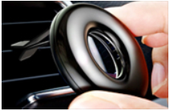
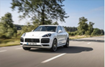
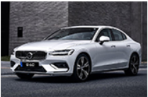
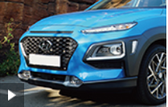
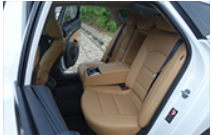
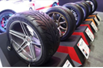
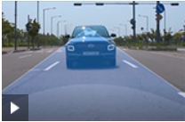
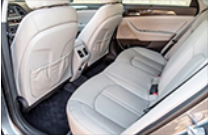

|  이거 하나로 2년을? 지속력 끝판왕이라는데 |
 포르쉐 카이엔 터보 S 플러그인 하이브리드 출시 |
 볼보 디자인 센터장, S60 목표는 '독일차 넘어서기' |
 출퇴근으로 딱! 코나 하이브리드, 제일 먼저 타보았습니다 |
|  기아 K7 프리미어 3.0 시그니처 시승기 |
 타이어의 폭이 넓어지면 주행성능은 어떻게 변할까? |
 현대 베뉴 - 안전운전을 위한 '현대스마트센스' 세팅법 |
 뒷자리만큼은 가장 넓다고 평가받은 국산차 |